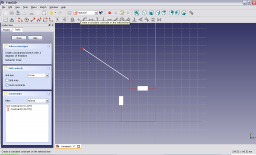
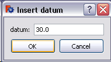

Sketcher ConstrainLock |
| Umístění Menu |
|---|
| Sketch → Sketcher constraints → Constrain lock |
| Pracovní stoly |
| Sketcher, PartDesign |
| Výchozí zástupce |
| Nikdo |
| Viz také |
| Constraint Coincident |
Contents |
"Vytvoření zámku na vybrané položce"
Popis
Tento nástroj se pokusí plně ustavit jakoukoliv vybranou položku.
POZNÁMKA: V současné době je doporučováno používat tento nástroj pro body:
Owing to the fact that FreeCAD is still under development - this tool exhibits strange behaviour when it attempts to 'lock' anything other than a point. For example (as of V0.12 R4802), when locking a circle by its circumferential line rather than its centre point, a horizontal constraint and a vertical constraint appear in the constraints dialogue, but they are both of value zero and do not appear in the graphics window.
Operation
- Firstly it is necessary to highlight an item you wish to constrain. For reasons alluded-to above it is wise to only highlight a point.

-
Highlighting of a drawing item is achieved by moving the mouse over the item and clicking the left-mouse-button.
A highlighted item will change colour to green.

-
Once an item is highlighted, left-clicking on the lock constraint serves to lock the highlighted item in-place. This usually manifests as two constraints: a horizontal distance constraint from the drawing axis origin, and a vertical constraint from the drawing axis origin. These are set by default to the current co-ordinates of the point.
 -
The vertical and horizontal constraints forming the lock can be edited by double clicking on the appropriate constraint to be edited either in the drawing itself or in the Constraint tab of the Combo View pane. This will open a dialog box to edit the constraint. Clicking on the horizontal constraint component produces:
 .
. - Enter the desired value into the dialog box and click OK.
 - The new value of the constraint is applied to the drawing.

- The vertical constraint may be similarly edited to constrain the point to the desired location.


{kind=link}
{kind=link}
{kind=link}